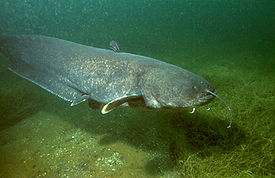

Сом
Обыкнове́нный сом, или европе́йский сом (лат. Silurus glanis) — крупная пресноводная бесчешуйчатая рыба семейства сомовых (Siluridae).
Длина тела до 5 м, масса до 400 кг (по историческим данным). Л. П. Сабанеев приводит сведения Кесслера о поимке сомов массой более 300 кг в XIX веке, в Днепре, Днестре и Одере. Официально зарегистрирован пойманный сом массой 306 кг, длиной более 3 м и возрастом около 80 лет[5]. Сейчас сомы массой выше 100 кг встречаются крайне редко, тем не менее зарегистрированы случаи поимки сомов длиной более 2,5 м и массой около 150 кг[6]. Анальный плавник длинный, жировой плавник отсутствует, непарные плавники не имеют шипов.
Окрас в большинстве случаев бурый с оттенками коричнево-зелёного, брюхо белое. В зависимости от мест обитания окрас может меняться от почти чёрного до светло-жёлтого. Иногда встречаются сомы альбиносы.